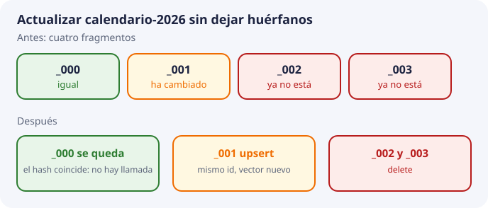

8. Operaciones de gestión¶
En el tema 7 vimos el pipeline completo, y sus últimos pasos eran «upsert» y «borrar huérfanos». Este tema explica esas operaciones y las demás que se hacen sobre una colección: insertar, leer, actualizar y borrar. Y responde a la pregunta práctica: ¿cómo se mantiene la colección al día durante un curso entero sin que se llene de datos viejos o duplicados?
Todas las salidas que aparecen aquí son reales, de ChromaDB 1.1.0, la versión fijada en el repositorio. El laboratorio de ChromaDB local hace lo mismo con vectores escritos a mano, para ver el efecto sin Titan. No es el cuaderno de Colab de la sesión 1.
Las operaciones, comparadas con SQL¶
En SBD conoces las cuatro operaciones básicas de una base de datos: crear, leer, actualizar y borrar (a veces se resumen con las siglas inglesas CRUD). ChromaDB tiene las mismas, con otros nombres:
| Qué se quiere hacer | En SQL | En ChromaDB |
|---|---|---|
| Insertar un registro nuevo | INSERT |
add |
| Insertar o, si ya existe, sustituir | INSERT … ON CONFLICT o MERGE |
upsert |
| Cambiar un registro que ya existe | UPDATE |
update |
| Borrar | DELETE |
delete |
| Leer por condiciones | SELECT … WHERE |
get |
| Leer los más parecidos a una pregunta | (no existe) | query |
| Contar | SELECT COUNT(*) |
count |
La única operación nueva es query, la búsqueda por parecido que hemos estudiado en toda la unidad. Las demás son gestión de datos de toda la vida.
El ejemplo que vamos a seguir¶
Usamos el mismo documento que el laboratorio y el ejercicio 6: el calendario escolar, calendario-2026, que al principio tiene cuatro fragmentos.
| id | texto | curso |
|---|---|---|
calendario-2026_000 |
Calendario, fragmento 0 | 2026-2027 |
calendario-2026_001 |
Calendario, fragmento 1 | 2026-2027 |
calendario-2026_002 |
Calendario, fragmento 2 | 2026-2027 |
calendario-2026_003 |
Calendario, fragmento 3 | 2026-2027 |
Todos tienen categoria = g5 y doc_id = calendario-2026. coleccion.count() devuelve 4.
Insertar: add y upsert¶
Qué pasa si se repite un add¶
Imagina que el pipeline falla a mitad, o que alguien vuelve a lanzar el script. Se ejecuta otra vez add con calendario-2026_001, pero ahora con el texto corregido «Calendario, fragmento 1 NUEVO». Resultado real:
add repetido: sin error
count = 4
calendario-2026_001 Calendario, fragmento 1 ← sigue el texto viejo
ChromaDB no da error y no sustituye nada: ignora en silencio el registro repetido. El texto corregido no ha entrado y nadie se ha enterado. Semanas después, DocIA+ seguiría citando la versión antigua.
upsert: insertar o sustituir¶
upsert hace lo que queremos: si el identificador no existe, lo inserta; si existe, lo sustituye entero (texto, vector y metadatos). Lanzando el mismo upsert dos veces:
upsert x2
count = 4
calendario-2026_001 Calendario, fragmento 1 NUEVO ← texto nuevo, y un solo registro
Sigue habiendo 4 registros, y el texto es el nuevo. Da igual cuántas veces se ejecute: el resultado es el mismo. A esa propiedad se le llama idempotencia: repetir la operación no cambia el resultado. Es justo lo que necesita un pipeline que puede lanzarse varias veces.
Regla de DocIA+: el pipeline escribe siempre con upsert, nunca con add. (En el cuaderno de Colab de la sesión 1 se usa add, porque ahí la colección se crea desde cero cada vez.)
Por qué el identificador tiene que calcularse¶
upsert solo sustituye si recibe el mismo identificador. Por eso, como vimos en el tema 5, el identificador se calcula a partir del documento, {doc_id}_{chunk}, en lugar de inventarse. Si cada ejecución generase un código aleatorio nuevo, upsert no encontraría nunca el registro anterior y cada reindexación duplicaría todos los fragmentos.
Leer: query, get y count¶
Hay tres formas de leer, para cosas distintas:
| Operación | Lleva vector | Para qué | Ejemplo |
|---|---|---|---|
query |
Sí | Buscar los k fragmentos más parecidos a una pregunta, con filtro opcional | Lo que hace DocIA+ cuando alguien pregunta |
get |
No | Listar registros por identificador o por metadatos | Revisar qué hay de un documento |
count |
No | Saber cuántos registros hay | Comprobar una carga |
get es la herramienta de auditoría. Por ejemplo, para ver qué fragmentos hay del calendario sin traer el texto:
coleccion.get(where={"doc_id": "calendario-2026"}, include=[])
# ids: ['calendario-2026_000', 'calendario-2026_001', 'calendario-2026_002', 'calendario-2026_003']
query devuelve identificadores, textos, metadatos y distancias en listas alineadas por posición, como vimos en el tema 5. El texto devuelto es el que se cita: al responder no se vuelve a abrir el PDF. Por eso el texto guardado tiene que ser citable.
Cuando exista la API de DocIA+, la consulta tendrá este contrato mínimo:
entrada: texto de la pregunta, k, filtros opcionales
proceso: vector de la pregunta con el mismo modelo y las mismas opciones (tema 2)
salida: k registros que cumplen el filtro, ordenados de menor a mayor distancia
Los valores de k y los filtros los decide quien llama. La colección no los adivina.
Actualizar un documento¶
Este es el caso más importante del tema. El centro publica una versión nueva del calendario. Al trocearla (tema 7), ahora solo salen dos fragmentos:
calendario-2026_000: el texto no ha cambiado, y su hash coincide con el guardado.calendario-2026_001: el texto ha cambiado, y su hash es distinto.- Los fragmentos
_002y_003ya no existen en la versión nueva.

El procedimiento, para un doc_id, tiene cuatro pasos:
- Trocear el fichero nuevo y calcular sus identificadores:
{_000, _001}. - Comparar hashes y configuración del embedding. Si coinciden,
_000reutiliza su vector, pero sus metadatos se actualizan si han cambiado._001necesita un vector nuevo. El hash corresponde al texto exacto enviado al modelo, incluido el contexto añadido. upsertde lo que ha cambiado:_001.- Borrar los que sobran, solo después de validar la extracción completa y confirmar las escrituras: los que había antes para ese
doc_idy ya no se han generado.
El paso 4 es una resta de conjuntos:
viejos = set(coleccion.get(where={"doc_id": "calendario-2026"}, include=[])["ids"])
nuevos = {"calendario-2026_000", "calendario-2026_001"}
sobran = viejos - nuevos # {'calendario-2026_002', 'calendario-2026_003'}
if sobran:
coleccion.delete(ids=sorted(sobran))
Después de los cuatro pasos, la colección queda así (salida real):
count = 2
calendario-2026_000 Calendario, fragmento 0
calendario-2026_001 Calendario, fragmento 1 NUEVO
El paso 4 es el que se olvida. Si no se hace, _002 y _003 se quedan en la colección con el texto del calendario viejo. Son huérfanos: ya no existen en el PDF, pero se siguen recuperando. El síntoma aparece semanas después: una respuesta que cita un párrafo que ya no está en el documento oficial. En el protocolo de incidencias del proyecto, un error así se trata como incidencia alta: se revisa el pipeline y se reindexa.
Cambiar solo metadatos: update¶
A veces el texto no cambia y solo hay que reclasificar un fragmento: corregir su curso, por ejemplo. Para eso no hace falta volver a pedir el vector: basta update con los metadatos nuevos. Salida real, cambiando el curso de _000:
coleccion.update(ids=["calendario-2026_000"], metadatas=[{"curso": "2027-2028"}])
calendario-2026_000 Calendario, fragmento 0 {'curso': '2027-2028', 'categoria': 'g5', 'doc_id': 'calendario-2026', 'chunk': 0}
Fíjate en que solo ha cambiado curso. Los demás metadatos (categoria, doc_id, chunk) se conservan: update mezcla lo nuevo con lo que ya había.
Lo que update no sirve es para «corregir el significado» de un fragmento. El significado es el vector, y el vector sale del texto. Si el texto cambia, se hace upsert con el vector nuevo.
| Situación | Operación |
|---|---|
| El texto ha cambiado | upsert con texto, vector nuevo y metadatos |
| Solo cambia algún metadato | update con esos metadatos |
| El fragmento ya no existe | delete |
Borrar: delete¶
Hay tres maneras de borrar, de menos a más peligrosa:
| Qué se borra | Cómo | Cuándo |
|---|---|---|
| Registros concretos | delete(ids=[...]) |
Huérfanos al actualizar un documento |
| Todos los fragmentos de un documento | delete(where={"doc_id": "calendario-2026"}) |
El documento se retira |
| Una categoría entera | delete(where={"categoria": "g5"}) |
Solo de forma deliberada, en una operación revisada |
ChromaDB protege contra un error: delete() sin indicar nada da un error (At least one of ids, where, or where_document must be provided), así que no se puede vaciar la colección por despiste. Pero delete(where={"categoria": "g5"}) borra sin preguntar todos los fragmentos de g5, de todos los grupos.
Por eso, durante el desarrollo, cada grupo trabaja en una colección local o con un prefijo de doc_id propio. Nadie prueba un borrado masivo contra la colección compartida que ya tiene los 80 documentos.
Operaciones que fallan en silencio¶
Resumimos lo que las pruebas han enseñado. Hay tres situaciones en las que ChromaDB no avisa de que algo no ha pasado:
| Lo que se hace | Lo que pasa | Por qué es peligroso |
|---|---|---|
add de un id que ya existe |
Se ignora; queda el registro viejo | Parece que se ha actualizado y no |
update de un id que no existe |
No hace nada | Parece que se ha corregido y no |
delete de un id que no existe |
No hace nada | Un error en el identificador pasa desapercibido |
La consecuencia es una regla de trabajo: después de escribir, se comprueba. Tras reindexar un documento, un get por su doc_id tiene que devolver exactamente los identificadores nuevos, y count tiene que cuadrar con lo esperado. El laboratorio lo hace así: al final comprueba que del calendario quedan exactamente _000 y _001, y que _001 tiene el texto nuevo. Si no, se para con un error.
Copias y restauración¶
La colección se puede reconstruir desde los documentos originales (tema 5), pero eso gasta llamadas a Titan y tiempo. Por eso el proyecto prevé copias periódicas. Las reglas:
- Se copia en reposo. El directorio de ChromaDB se copia cuando no hay escrituras, o con una instantánea del disco. Como vimos en el tema 5, tiene dos partes (SQLite y el índice HNSW) que deben corresponder al mismo momento.
- Se copian las dos partes. Una copia solo de los vectores, sin SQLite, no sirve: no se sabe de qué texto es cada vector. Una copia solo del texto obliga a reindexar.
- La copia vive fuera de la máquina de la API, en el almacén de objetos, junto a los originales pero separada de ellos.
- Restaurar incluye comprobar. Se vuelve a poner el directorio y se cuenta con
getcuántos fragmentos hay por categoría. Tiene que coincidir con lo que había al hacer la copia. - Antes de reabrir el servicio, se lanza una muestra de las preguntas de prueba del tema 9 para ver que las respuestas siguen saliendo.
Qué queda registrado de cada ejecución¶
Cada vez que el pipeline se ejecuta deja un registro de lo que hizo, fuera de la colección:
doc_id: calendario-2026
fragmentos escritos: 1
llamadas a Titan ahorradas por el hash: 1
borrados: 2
error: ninguno
Con eso se puede saber, semanas después, qué pasó con cada documento. Es explotación del proceso de carga, que corresponde a BDA. No es un registro de las preguntas de los usuarios, que no se guardan.
Comprueba que lo has entendido¶
1. Se ejecuta add con un identificador que ya existe y un texto corregido. ¿Qué pasa en ChromaDB 1.1.0?
Nada visible: no da error, pero tampoco sustituye. El registro sigue con el texto viejo. Por eso el pipeline usa upsert.
2. ¿Qué significa que upsert es idempotente?
Que ejecutarlo una vez o varias deja el mismo resultado: un solo registro con los datos de la última ejecución.
3. Si el identificador fuera un código aleatorio distinto en cada ejecución, ¿serviría de algo upsert?
No. Nunca encontraría el registro anterior, así que cada reindexación añadiría registros nuevos y duplicaría todos los fragmentos.
4. El documento oferta-iabd-2026 tenía los fragmentos _000 a _004 y la versión nueva produce _000 a _002. ¿Qué identificadores se borran?
viejos − nuevos = {_003, _004}, es decir oferta-iabd-2026_003 y oferta-iabd-2026_004.
5. Un fragmento está bien escrito pero tiene el curso equivocado. ¿upsert o update?
update con el metadato curso. El texto no ha cambiado, así que no hace falta pedir otro vector. Los demás metadatos se conservan.
6. ¿Qué diferencia hay entre get y query?
query lleva el vector de una pregunta y devuelve los más parecidos. get no lleva vector: devuelve los registros que cumplen un identificador o un filtro. get sirve para auditar.
7. Tras reindexar un documento, ¿cómo compruebas que no han quedado huérfanos?
Con un get por su doc_id: tiene que devolver exactamente los identificadores de la versión nueva, ni uno más.
8. Alguien copia el directorio de ChromaDB mientras el pipeline indexa. ¿Qué riesgo hay?
Que SQLite y el índice HNSW queden copiados de momentos distintos y la copia sea incoherente. Se copia en reposo o con una instantánea del disco.